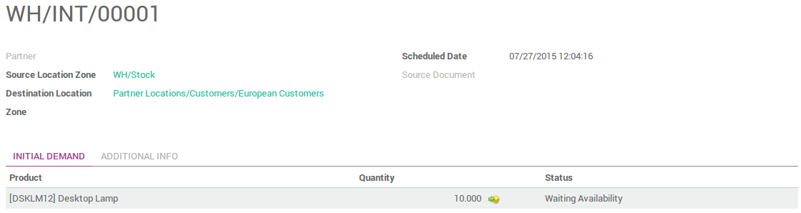

Overview
Scrap means waste that either has no economic value or only the value of its basic material
content recoverable through recycling.
In your warehouse you sometimes find products that are damaged or that are unusable due to expiry or for some other reason. You often notice this during picking or physical inventory.
Since you cannot normally sell or store these products, you have to scrap product.
When goods are scrapped they are not reflected in the system as a part of the inventory. The scrapped material will be physically moved to scrap area.
Configuration
When you install inventory management, odoo automatically creates one default scrap location, namely Virtual location/Scrapped.
To create an extra scrap location, Go to and check Manage several locations per warehouse, then click on Apply.

After applying Manage several location per warehouse, you can create a new scrap location in
Note
To define a scrap location, you have to check Is a Scrap Location? on location form view.
Different ways to scrap product
Odoo provides several ways to scrap products.
1) Scrap from Receipt (Initial Demand tab).
To scrap product from incoming shipment, Go to .

Open the incoming shipment, and in the Initial demand tab, click on the scrap products button.

2) Scrap from delivery order (Initial Demand tab) .
To scrap product from outgoing shipment, Go to

Open the outgoing shipment, and in the Initial demand tab, click on the scrap products button on stock move in initial demand tab.

3) Scrap from internal transfer (Initial Demand tab).
To scrap product from internal transfer, Go to

Open the internal transfer, and in the Initial demand tab, click on the scrap products button on stock move in initial demand tab.
When you click on scrap button, a popup will open. You can enter the quantity of products, and specify the scrap location, then click on Scrap.

Note
To allow change scrap location on wizard, you have to select Manage several location per warehouse in the settings at